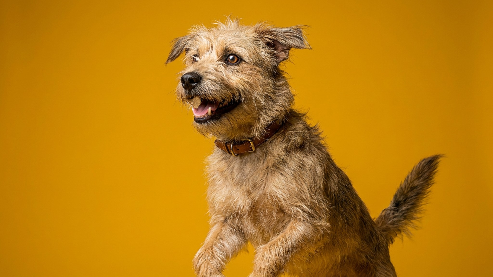

Вы ещё только в лифте — а собака уже сидит у двери. Кошка будит вас в 6:59, за минуту до будильника. Это не магия и не совпадение: у животных есть сразу несколько способов «считывать» время без всяких часов. Разберём, как это работает — и как использовать, чтобы питомцу было спокойнее ждать вас одному.
🐾 У вашего питомца так же?
Расскажите в AnimaLife, как ведёт себя ваш питомец, — приложение объяснит причину и даст пошаговый план. Бесплатно, без записи к специалисту.
Разобрать свой случай → Разобрать в MAX →
У вас iPhone? AnimaLife есть в App Store
У кошек и собак, как у нас, есть циркадные ритмы — встроенный суточный «метроном», настроенный на свет, темноту, голод и активность. Он подсказывает животному, когда пора спать, охотиться, ждать еду или прогулку, даже если хозяина нет рядом.
Поэтому питомец так точно «знает» время кормления или подъёма: организм отсчитывает цикл сам, а вы лишь видите результат — кот у миски ровно к завтраку. У кошек этот механизм ещё и сдвинут к сумеречной активности: пик бодрости приходится на рассвет и закат, отсюда и ранние побудки «до будильника».
Кроме биологических часов животные опираются на приметы вашего распорядка. Они читают закономерности лучше нас.
Предсказуемость — основа спокойствия. Когда день идёт по понятному сценарию, животное не тревожится: оно примерно «знает», сколько ждать до еды, прогулки и вашего возвращения.
И наоборот: хаотичный график, когда кормление и уходы каждый день в разное время, лишает питомца опоры. Отсюда часть скуки, лишнего лая, ночной активности и беспокойства в одиночестве.
🐾 Хотите понять, что питомец говорит вам?
Опишите ситуацию или пришлите видео в AnimaLife — AI разберёт поведение вашего питомца и подскажет, что делать. Бесплатно, ответ за минуту.
Разобрать поведение → Разобрать в MAX →
У вас iPhone? AnimaLife есть в App Store
🐾 Понравился разбор?
Подпишитесь на канал — каждый день разбираем по одному тревожному симптому у кошек и собак: что в пределах нормы, а когда пора к врачу. Подпишитесь, чтобы не пропустить разбор, который может спасти здоровье вашего питомца.
Играть на его чувстве времени можно в плюс — сделать ожидание спокойнее.
Чувство времени у питомца — не мистика, а биология плюс наблюдательность. Дайте ему понятный распорядок, и встреча у двери станет не тревожным ожиданием, а спокойной привычкой.